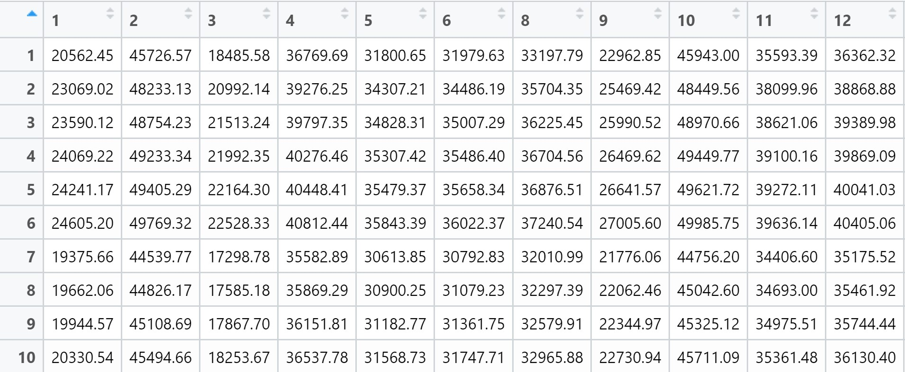
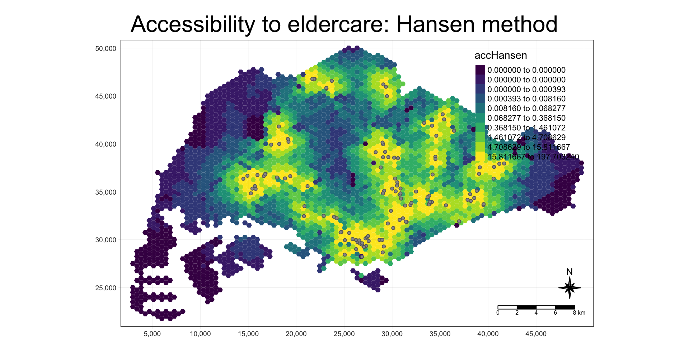
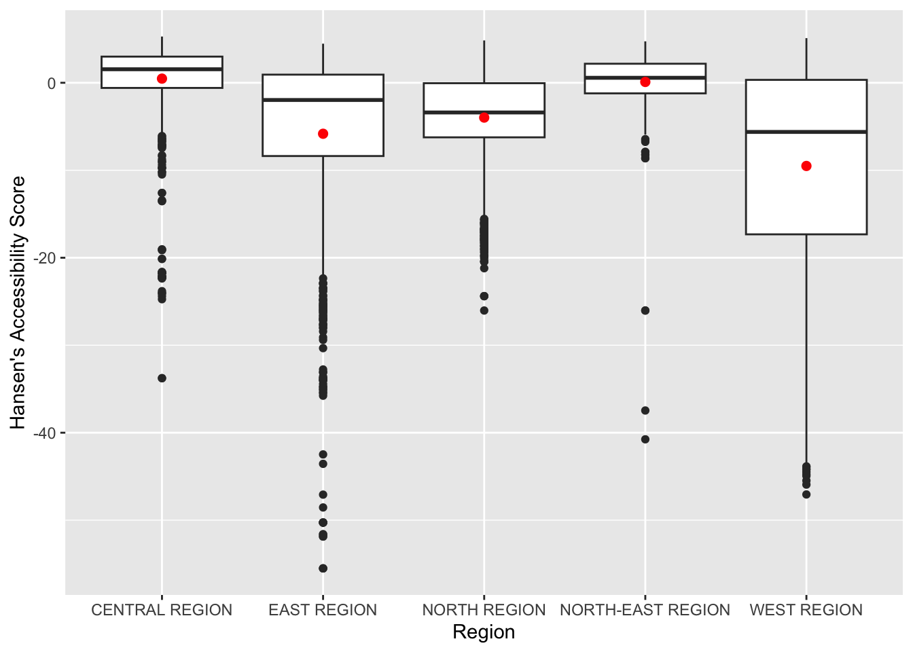
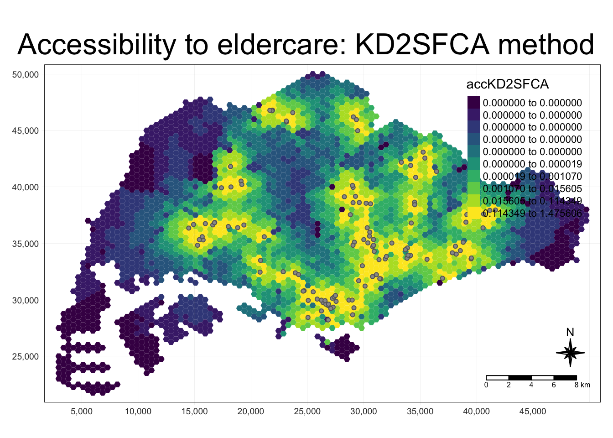
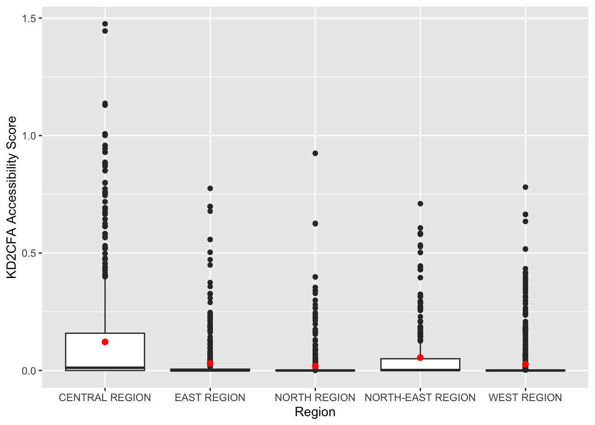
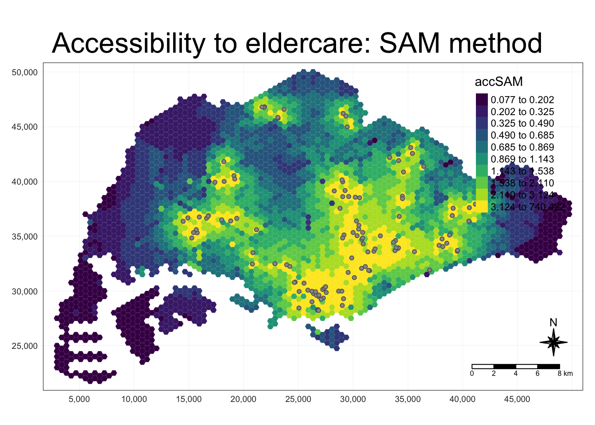
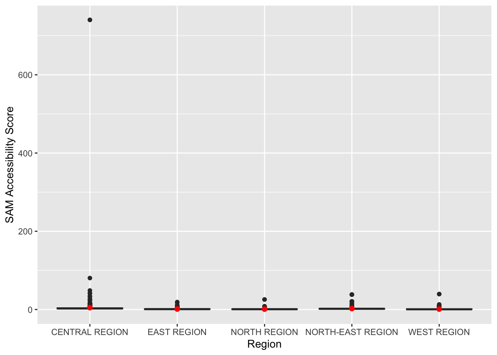

pacman::p_load(tmap, SpatialAcc, sf,
ggstatsplot, reshape2,
tidyverse)Hands-on Exercise 10
Hands-On Exercise
R
sf
GWmodel
SpatialML
Modelling Geographical Accessibility
Modelling Geographical Accessibility
1.0 Overview
Geographical Accessibility Modelling is a method used in spatial analysis and planning to understand the degree of ease with which a location or service can be reached from other locations. This concept is crucial in fields like urban planning, transportation, and healthcare. The goal of such modelling is to identify areas of high and low accessibility, which can inform decision-making processes in urban development, resource allocation, and policy-making. It’s a powerful tool for creating more equitable and efficient systems.
In this exercise, we will explore how to use appropriate functions and R packages to compute and visualise the geographocal accessibility. We will also explore two methodologies - Hansen’s potential model and Spatial Accessibility Measure (SAM) to compute accessibility.
2.0 Importing Packages
Firstly, we will install and import necessary R-packages for this modelling exercise. The R packages needed for this exercise are as follows:
tmap which provides functions for plotting cartographic quality static point patterns maps or interactive maps by using leaflet API.
SpatialAcc which provides a set of spatial accessibility measures
sf for importing, managing and processing vector-based geospatial data in R.
ggstatsplot for creating correlation plots and graphics with details from statistical tests included in the plots.
reshape2 for reshaping dataframes between ‘wide’ format with repeated measurements in separate columns of the same record and ‘long’ format with the repeated measurements in separate records.
tidyversefor wrangling attribute data in R
2.0 Importing Datasets
Four data sets will be used in this hands-on exercise, they are:
MP14_SUBZONE_NO_SEA_PL: URA Master Plan 2014 subzone boundary GIS data. This data set is downloaded from data.gov.sg.hexagons: A 250m radius hexagons GIS data. This data set was created by using st_make_grid() of sf package. It is in ESRI shapefile format.ELDERCARE: GIS data showing location of eldercare service. This data is downloaded from data.gov.sg. There are two versions. One in ESRI shapefile format. The other one in Google kml file format. For the purpose of this hands-on exercise, ESRI shapefile format is provided.OD_Matrix: a distance matrix in csv format. There are six fields in the data file. They are:origin_id: the unique id values of the origin (i.e.fidof hexagon data set.),destination_id: the unique id values of the destination (i.e.fidofELDERCAREdata set.),entry_cost: the perpendicular distance between the origins and the nearest road),network_cost: the actual network distance from the origin and destination,exit_cost: the perpendicular distance between the destination and the nearest road), andtotal_cost: the summation ofentry_cost,network_costandexit_cost.
All the values of the cost related fields are in metres.
mpsz <- st_read(dsn = "../data/geospatial", layer = "MP14_SUBZONE_NO_SEA_PL")Reading layer `MP14_SUBZONE_NO_SEA_PL' from data source
`/Users/khantminnaing/IS415-GAA/data/geospatial' using driver `ESRI Shapefile'
Simple feature collection with 323 features and 15 fields
Geometry type: MULTIPOLYGON
Dimension: XY
Bounding box: xmin: 2667.538 ymin: 15748.72 xmax: 56396.44 ymax: 50256.33
Projected CRS: SVY21hexagons <- st_read(dsn = "../data/geospatial", layer = "hexagons") Reading layer `hexagons' from data source
`/Users/khantminnaing/IS415-GAA/data/geospatial' using driver `ESRI Shapefile'
Simple feature collection with 3125 features and 6 fields
Geometry type: POLYGON
Dimension: XY
Bounding box: xmin: 2667.538 ymin: 21506.33 xmax: 50010.26 ymax: 50256.33
Projected CRS: SVY21 / Singapore TMeldercare <- st_read(dsn = "../data/geospatial", layer = "ELDERCARE")Reading layer `ELDERCARE' from data source
`/Users/khantminnaing/IS415-GAA/data/geospatial' using driver `ESRI Shapefile'
Simple feature collection with 120 features and 19 fields
Geometry type: POINT
Dimension: XY
Bounding box: xmin: 14481.92 ymin: 28218.43 xmax: 41665.14 ymax: 46804.9
Projected CRS: SVY21 / Singapore TM
Reflection
The data we've imported have undergone pre-processing using the QGIS software. This procedure can also be executed within the R environment by utilizing the appropriate functions and packages. However, it's important to note that this method can be computationally demanding and not advisable to use, especially when the study area and the raw datasets are huge.
3.0 Data Processing & Wrangling
In this session, we will carry out necessary data processing and wrangling steps before conducting the analysis.
3.1 Geospatial Data Wrangling
3.1.1 Updating CRS Information
Firstly, we will update the newly imported sf objects with correct ESPF code (i.e., 3414)
mpsz <- st_transform(mpsz, 3414)
eldercare <- st_transform(eldercare, 3414)
hexagons <- st_transform(hexagons, 3414)After transforming the projection metadata, you can verify the projection of the newly transformed sf objects by using st_crs() function of sf package.
st_crs(mpsz)Coordinate Reference System:
User input: EPSG:3414
wkt:
PROJCRS["SVY21 / Singapore TM",
BASEGEOGCRS["SVY21",
DATUM["SVY21",
ELLIPSOID["WGS 84",6378137,298.257223563,
LENGTHUNIT["metre",1]]],
PRIMEM["Greenwich",0,
ANGLEUNIT["degree",0.0174532925199433]],
ID["EPSG",4757]],
CONVERSION["Singapore Transverse Mercator",
METHOD["Transverse Mercator",
ID["EPSG",9807]],
PARAMETER["Latitude of natural origin",1.36666666666667,
ANGLEUNIT["degree",0.0174532925199433],
ID["EPSG",8801]],
PARAMETER["Longitude of natural origin",103.833333333333,
ANGLEUNIT["degree",0.0174532925199433],
ID["EPSG",8802]],
PARAMETER["Scale factor at natural origin",1,
SCALEUNIT["unity",1],
ID["EPSG",8805]],
PARAMETER["False easting",28001.642,
LENGTHUNIT["metre",1],
ID["EPSG",8806]],
PARAMETER["False northing",38744.572,
LENGTHUNIT["metre",1],
ID["EPSG",8807]]],
CS[Cartesian,2],
AXIS["northing (N)",north,
ORDER[1],
LENGTHUNIT["metre",1]],
AXIS["easting (E)",east,
ORDER[2],
LENGTHUNIT["metre",1]],
USAGE[
SCOPE["Cadastre, engineering survey, topographic mapping."],
AREA["Singapore - onshore and offshore."],
BBOX[1.13,103.59,1.47,104.07]],
ID["EPSG",3414]]st_crs(eldercare)Coordinate Reference System:
User input: EPSG:3414
wkt:
PROJCRS["SVY21 / Singapore TM",
BASEGEOGCRS["SVY21",
DATUM["SVY21",
ELLIPSOID["WGS 84",6378137,298.257223563,
LENGTHUNIT["metre",1]]],
PRIMEM["Greenwich",0,
ANGLEUNIT["degree",0.0174532925199433]],
ID["EPSG",4757]],
CONVERSION["Singapore Transverse Mercator",
METHOD["Transverse Mercator",
ID["EPSG",9807]],
PARAMETER["Latitude of natural origin",1.36666666666667,
ANGLEUNIT["degree",0.0174532925199433],
ID["EPSG",8801]],
PARAMETER["Longitude of natural origin",103.833333333333,
ANGLEUNIT["degree",0.0174532925199433],
ID["EPSG",8802]],
PARAMETER["Scale factor at natural origin",1,
SCALEUNIT["unity",1],
ID["EPSG",8805]],
PARAMETER["False easting",28001.642,
LENGTHUNIT["metre",1],
ID["EPSG",8806]],
PARAMETER["False northing",38744.572,
LENGTHUNIT["metre",1],
ID["EPSG",8807]]],
CS[Cartesian,2],
AXIS["northing (N)",north,
ORDER[1],
LENGTHUNIT["metre",1]],
AXIS["easting (E)",east,
ORDER[2],
LENGTHUNIT["metre",1]],
USAGE[
SCOPE["Cadastre, engineering survey, topographic mapping."],
AREA["Singapore - onshore and offshore."],
BBOX[1.13,103.59,1.47,104.07]],
ID["EPSG",3414]]st_crs(hexagons)Coordinate Reference System:
User input: EPSG:3414
wkt:
PROJCRS["SVY21 / Singapore TM",
BASEGEOGCRS["SVY21",
DATUM["SVY21",
ELLIPSOID["WGS 84",6378137,298.257223563,
LENGTHUNIT["metre",1]]],
PRIMEM["Greenwich",0,
ANGLEUNIT["degree",0.0174532925199433]],
ID["EPSG",4757]],
CONVERSION["Singapore Transverse Mercator",
METHOD["Transverse Mercator",
ID["EPSG",9807]],
PARAMETER["Latitude of natural origin",1.36666666666667,
ANGLEUNIT["degree",0.0174532925199433],
ID["EPSG",8801]],
PARAMETER["Longitude of natural origin",103.833333333333,
ANGLEUNIT["degree",0.0174532925199433],
ID["EPSG",8802]],
PARAMETER["Scale factor at natural origin",1,
SCALEUNIT["unity",1],
ID["EPSG",8805]],
PARAMETER["False easting",28001.642,
LENGTHUNIT["metre",1],
ID["EPSG",8806]],
PARAMETER["False northing",38744.572,
LENGTHUNIT["metre",1],
ID["EPSG",8807]]],
CS[Cartesian,2],
AXIS["northing (N)",north,
ORDER[1],
LENGTHUNIT["metre",1]],
AXIS["easting (E)",east,
ORDER[2],
LENGTHUNIT["metre",1]],
USAGE[
SCOPE["Cadastre, engineering survey, topographic mapping."],
AREA["Singapore - onshore and offshore."],
BBOX[1.13,103.59,1.47,104.07]],
ID["EPSG",3414]]3.1.2 Cleaning and Updating Attribute Fields
There are many redundant fields in the data tables of both eldercare and hexagons. The code chunks below will be used to exclude those redundant fields. At the same time, a new field called demand and a new field called capacity will be added into the data table of hexagons and eldercare sf data frame respectively. Both fields are derive using mutate() of dplyr package.
eldercare <- eldercare %>%
select(fid, ADDRESSPOS) %>%
mutate(capacity = 100)hexagons <- hexagons %>%
select(fid) %>%
mutate(demand = 100)
Reflection
For the purpose of this hands-on exercise, a hypothetical constant value of 100 is used. In practice, actual demand of the hexagon and capacity of the eldercare centre should be used to achieve realistic and accurate results. This remains a significant challenge in real-world urban planning due to the limited on-ground data and infrequent survey works.
3.2 Aspatial Data Wrangling
3.2.1 Importing Distance Matrix
Firstly, we will use read_cvs() of readr package to improt OD_Matrix.csv into R environemnt. The imported object is a tibble data.frame called ODMatrix.
ODMatrix <- read_csv("../data/aspatial/OD_Matrix.csv", skip = 0)Rows: 375000 Columns: 6
── Column specification ────────────────────────────────────────────────────────
Delimiter: ","
dbl (6): origin_id, destination_id, entry_cost, network_cost, exit_cost, tot...
ℹ Use `spec()` to retrieve the full column specification for this data.
ℹ Specify the column types or set `show_col_types = FALSE` to quiet this message.3.2.2 Tidying Distance Matrix
head(ODMatrix)# A tibble: 6 × 6
origin_id destination_id entry_cost network_cost exit_cost total_cost
<dbl> <dbl> <dbl> <dbl> <dbl> <dbl>
1 1 1 668. 19847. 47.6 20562.
2 1 2 668. 45027. 31.9 45727.
3 1 3 668. 17644. 173. 18486.
4 1 4 668. 36010. 92.2 36770.
5 1 5 668. 31068. 64.6 31801.
6 1 6 668. 31195. 117. 31980.
Reflection
In the context of network analytics, particularly in Origin-Destination (OD) matrix computations, the terms entry_cost, network_cost, and exit_cost are used to describe different components of the total cost associated with a network route.
Entry Cost: This is the cost associated with entering the network from a specific point or node. It could be thought of as the initial cost to start the journey on the network from a given origin.
Network Cost: This is the cost incurred while traveling within the network. It represents the cost of moving from one node to another within the network, considering factors such as distance, time, or other relevant metrics.
Exit Cost: This is the cost associated with leaving the network to reach a specific destination point or node. It could be thought of as the final cost to end the journey on the network at a given destination.
The total cost of a network route is typically the sum of the Entry Cost, Network Cost, and Exit Cost. These costs are crucial in network analysis as they help in determining the most efficient or optimal paths between various points in a network.
Looking at the data structure of ODMatrix as above, it organised the distance matrix columnwise. Such a structure is often termed as thin format. On the other hands, most of the modelling packages in R (including SpatialAcc that we are exploring in this exercise) expects a matrix look similar to the figure below. The rows represent origins (i.e. also know as from field) and the columns represent destination (i.e. also known as to field.)

To achieve a dataset similar to the example above, we will use pivot_wider() function of tidyr package to transform the ODMatrix object from a thin format to a wide format using total_cost.
distmat <- ODMatrix %>%
select(origin_id, destination_id, total_cost) %>%
pivot_wider(names_from = destination_id, values_from = total_cost)%>%
select(c(-c('origin_id')))Currently, the distance is measured in metre because SVY21 projected coordinate system is used. The code chunk below will be used to convert the unit f measurement from metre to kilometre.
distmat_km <- as.matrix(distmat/1000)4.0 Modelling and Visualising Accessibility using Hansen Method
4.1 Computing Hansen’s Accessibility
In this section, we will compute Hansen’s accessibility by using ac() function from SpatialAcc package.
acc_Hansen <- data.frame(ac(hexagons$demand,
eldercare$capacity,
distmat_km,
d0 = 50,
power = 2,
family = "Hansen"))
Reflection
power = 1 argument refers to the choice of distance decay function. This is often expressed through a mathematical function where the accessibility decreases with increasing distance.
In the context of spatial accessibility to services, for example, a larger distance-decay parameter indicates a stronger distance-decay effect on accessibility. This means that facilities located further away are less likely to be used than those closer.

head(acc_Hansen) ac.hexagons.demand..eldercare.capacity..distmat_km..d0...50..
1 1.648313e-14
2 1.096143e-16
3 3.865857e-17
4 1.482856e-17
5 1.051348e-17
6 5.076391e-18The default field name is very messy, we will rename it to accHansen by using the code chunk below.
colnames(acc_Hansen) <- "accHansen"Next, we will convert the data table into tibble format by using the code chunk below.
acc_Hansen <- tibble::as_tibble(acc_Hansen)Lastly, bind_cols() of dplyr will be used to join the acc_Hansen tibble data frame with the hexagons simple feature data frame. The output is called hexagon_Hansen.
hexagon_Hansen <- bind_cols(hexagons, acc_Hansen)head(hexagon_Hansen)Simple feature collection with 6 features and 3 fields
Geometry type: POLYGON
Dimension: XY
Bounding box: xmin: 2667.538 ymin: 22756.33 xmax: 3244.888 ymax: 27756.33
Projected CRS: SVY21 / Singapore TM
fid demand accHansen geometry
1 1 100 1.648313e-14 POLYGON ((2667.538 27506.33...
2 2 100 1.096143e-16 POLYGON ((2667.538 25006.33...
3 3 100 3.865857e-17 POLYGON ((2667.538 24506.33...
4 4 100 1.482856e-17 POLYGON ((2667.538 24006.33...
5 5 100 1.051348e-17 POLYGON ((2667.538 23506.33...
6 6 100 5.076391e-18 POLYGON ((2667.538 23006.33...We notice that hexagon_Hansen is a simple feature data frame and not a typical tibble data frame.
4.2 Visualising Hansen’s Accessibility
4.2.1 Extracting Map Extent
Firstly, we will extract the extend of hexagons simple feature data frame by by using st_bbox() of sf package.
mapex <- st_bbox(hexagons)Next, we will use relevant tmap functions to create a high cartographic quality accessibility to eldrecare centre in Singapore.
tmap_mode("plot")tmap mode set to plottingtm_shape(hexagon_Hansen,
bbox = mapex) +
tm_fill(col = "accHansen",
palette = "viridis",
n = 10,
style = "quantile",
border.col = "black",
border.lwd = 1) +
tm_shape(eldercare) +
tm_symbols(size = 0.1) +
tm_layout(main.title = "Accessibility to eldercare: Hansen method",
main.title.position = "center",
main.title.size = 2,
legend.outside = FALSE,
legend.height = 0.45,
legend.width = 3.0,
legend.format = list(digits = 6),
legend.position = c("right", "top"),
frame = TRUE) +
tm_compass(type="8star", size = 2) +
tm_scale_bar(width = 0.15) +
tm_grid(lwd = 0.1, alpha = 0.5)
4.3 Statistical Graphic Visualization
In this section, we are going to compare the distribution of Hansen’s accessibility values by URA Planning Region.
Firstly, we need to add the planning region field into hexagon_Hansen sf data frame by using the code chunk below.
hexagon_Hansen <- st_join(hexagon_Hansen, mpsz,
join = st_intersects)Next, ggplot() will be used to plot the distribution by using boxplot graphical method.
ggplot(data=hexagon_Hansen,
aes(y = log(accHansen),
x= REGION_N)) +
geom_boxplot() +
geom_point(stat="summary",
fun.y="mean",
colour ="red",
size=2) +
ylab("Hansen's Accessibility Score")+
xlab("Region")Warning in geom_point(stat = "summary", fun.y = "mean", colour = "red", :
Ignoring unknown parameters: `fun.y`No summary function supplied, defaulting to `mean_se()`
5.0 Modelling and Visualising Accessibility using Kernel Density Two-Step Floating Catchment Area (KD2SFCA) Method
5.1 Computing KD2SFCA’s Accessibility
In this section, we are going to calculate geographical accessibility using the kernal density two-step floating catchment area (KD2SFCA) method. To implement this, we will use ac() of SpatialAcc with specifying the family argument to KD2SFCA. The output is saved in a data frame called acc_KD2SFCA.
acc_KD2SFCA <- data.frame(ac(hexagons$demand,
eldercare$capacity,
distmat_km,
d0 = 50,
power = 2,
family = "KD2SFCA"))
colnames(acc_KD2SFCA) <- "accKD2SFCA"
acc_KD2SFCA <- tibble::as_tibble(acc_KD2SFCA)
hexagon_KD2SFCA <- bind_cols(hexagons, acc_KD2SFCA)5.2 Visualising KD2SFCA’s Accessibility
Next, we will use relevant tmap functions to create a high cartographic quality accessibility to eldrecare centre in Singapore.
tmap_mode("plot")tmap mode set to plottingtm_shape(hexagon_KD2SFCA,
bbox = mapex) +
tm_fill(col = "accKD2SFCA",
palette = "viridis",
n = 10,
style = "quantile",
border.col = "black",
border.lwd = 1) +
tm_shape(eldercare) +
tm_symbols(size = 0.1) +
tm_layout(main.title = "Accessibility to eldercare: KD2SFCA method",
main.title.position = "center",
main.title.size = 2,
legend.outside = FALSE,
legend.height = 0.45,
legend.width = 3.0,
legend.format = list(digits = 6),
legend.position = c("right", "top"),
frame = TRUE) +
tm_compass(type="8star", size = 2) +
tm_scale_bar(width = 0.15) +
tm_grid(lwd = 0.1, alpha = 0.5)
5.3 Statistical Graphic Visualisation
Now, we are going to compare the distribution of KD2CFA accessibility values by URA Planning Region. Firstly, we need to add the planning region field into hexagon_KD2SFCA sf data frame by using the code chunk below.
hexagon_KD2SFCA <- st_join(hexagon_KD2SFCA, mpsz,
join = st_intersects)Next, ggplot() will be used to plot the distribution by using boxplot graphical method.
ggplot(data=hexagon_KD2SFCA,
aes(y = accKD2SFCA,
x= REGION_N)) +
geom_boxplot() +
geom_point(stat="summary",
fun.y="mean",
colour ="red",
size=2) +
ylab("KD2CFA Accessibility Score")+
xlab("Region")Warning in geom_point(stat = "summary", fun.y = "mean", colour = "red", :
Ignoring unknown parameters: `fun.y`No summary function supplied, defaulting to `mean_se()`
6.0 Modelling and Visualising Accessibility using Spatial Accessibility Measure (SAM) Method
6.1 Computing SAM Accessibility
In this section, we are going to calculate geographical accessibility using SAM method. To implement this, we will use ac() of SpatialAcc with specifying the family argument to SAM. The output is saved in a data frame called acc_SAM.
acc_SAM <- data.frame(ac(hexagons$demand,
eldercare$capacity,
distmat_km,
d0 = 50,
power = 2,
family = "SAM"))
colnames(acc_SAM) <- "accSAM"
acc_SAM <- tibble::as_tibble(acc_SAM)
hexagon_SAM <- bind_cols(hexagons, acc_SAM)6.2 Visualising SAM’s Accessibility
Next, we will use relevant tmap functions to create a high cartographic quality accessibility to eldrecare centre in Singapore.
tmap_mode("plot")tmap mode set to plottingtm_shape(hexagon_SAM,
bbox = mapex) +
tm_fill(col = "accSAM",
palette = "viridis",
n = 10,
style = "quantile",
border.col = "black",
border.lwd = 1) +
tm_shape(eldercare) +
tm_symbols(size = 0.1) +
tm_layout(main.title = "Accessibility to eldercare: SAM method",
main.title.position = "center",
main.title.size = 2,
legend.outside = FALSE,
legend.height = 0.45,
legend.width = 3.0,
legend.format = list(digits = 3),
legend.position = c("right", "top"),
frame = TRUE) +
tm_compass(type="8star", size = 2) +
tm_scale_bar(width = 0.15) +
tm_grid(lwd = 0.1, alpha = 0.5)
6.3 Statistical Graphic Visualisation
Now, we are going to compare the distribution of SAM accessibility values by URA Planning Region. Firstly, we need to add the planning region field into hexagon_SAM sf data frame by using the code chunk below.
hexagon_SAM <- st_join(hexagon_SAM, mpsz,
join = st_intersects)Next, ggplot() will be used to plot the distribution by using boxplot graphical method.
ggplot(data=hexagon_SAM,
aes(y = accSAM,
x= REGION_N)) +
geom_boxplot() +
geom_point(stat="summary",
fun.y="mean",
colour ="red",
size=2) +
ylab("SAM Accessibility Score")+
xlab("Region")Warning in geom_point(stat = "summary", fun.y = "mean", colour = "red", :
Ignoring unknown parameters: `fun.y`No summary function supplied, defaulting to `mean_se()`